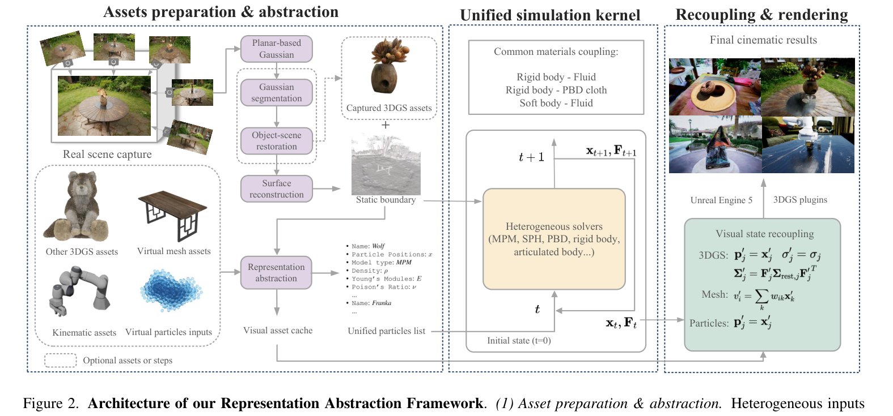

Robot dog through cloth
A quadruped pushes through a deformable cloth curtain in an outdoor scene.
Articulated bodyClothContact
TL;DR A Representation Abstraction Framework for making captured 3DGS assets physically interact with meshes, fluids, cloth, rigid bodies, and complex scenes.
3D Gaussian Splatting (3DGS) has achieved state-of-the-art photorealistic rendering, but the representation gap prevents these assets from being physically interactive. Production-grade physics engines do not understand the 3DGS representation, while prior physics-for-3DGS methods are monolithic silos. These prior works are fundamentally limited, demonstrating only object-centric physics in isolated environments, such as on an ideal plane — they are incapable of interacting with complex static collision geometry or heterogeneous assets. We propose a novel framework that, for the first time, bridges this gap by enabling 3DGS assets to participate in scene-level, heterogeneous, multi-solver physical simulations. Our core contribution is a Representation Abstraction Framework that “translates” all diverse assets—including 3DGS, virtual meshes, and fluids—into a unified physical particle set. This abstraction is key to enabling complex behaviors, such as the non-rigid deformation of 3DGS assets, within a unified physics pipeline. This particle set, along with the static scene collision boundaries derived from scene capture, is processed within a solver-agnostic physics kernel. The physical results are then mapped back to drive each asset’s specific visual reconstruction. This architecture unlocks capabilities impossible with prior art. We demonstrate complex, two-way interactions between deformable 3DGS assets, standard CG assets (like fluids and meshes), and large-scale captured static environments, showcasing realistic coupled phenomena that were previously unattainable.
A quadruped pushes through a deformable cloth curtain in an outdoor scene.
A soft rubber duck floats and interacts with clear water inside a wooden basin.
A patterned cloth drapes and slides over complex non-convex captured geometry.
Viscous chocolate sauce collides with and settles on a deformable donut.

Prepare static scene boundaries and unified simulation particles.
Couple MPM, SPH, PBD, rigid-body, and articulated-body solvers.
Map physical states back to 3DGS, mesh, and particle visual outputs.
Rendered using Unreal Engine.
SPH fluid interacts with a mesh bowl and a captured 3DGS garden scene.
Viscous fluid couples with a captured 3DGS donut soft body.
An articulated robot manipulates a rigid object in a captured scene.
PBD cloth follows complex captured statue geometry.
Virtual fruits collide with each other and an imported 3DGS container.
Rendered with a pure 3DGS renderer.
Material variation inside a captured environment.
Particle-like dynamics coupled with deformable visual assets.
A tool interacts with physically simulated objects.
High-viscosity fluid coupled with an elastic object.
@inproceedings{liu2026raf,
title = {Scene-Level Heterogeneous Physics Simulation with 3D Gaussian Splats},
author = {Liu, Xiaoyang and Wu, Shangzhe and Han, Kai},
booktitle = {CVPR Findings},
year = {2026}
}